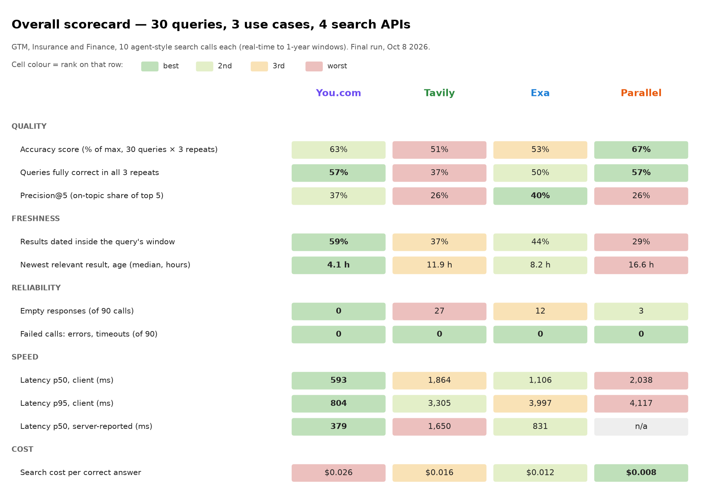
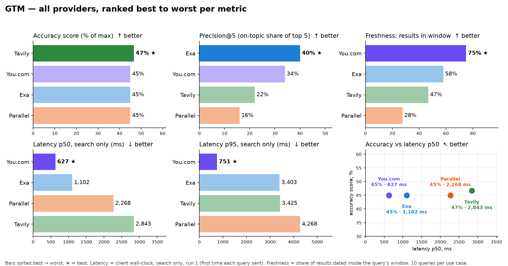
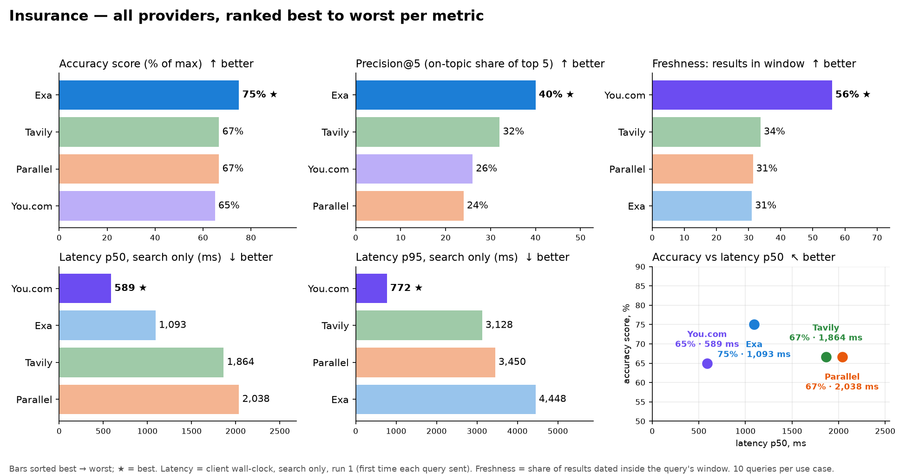
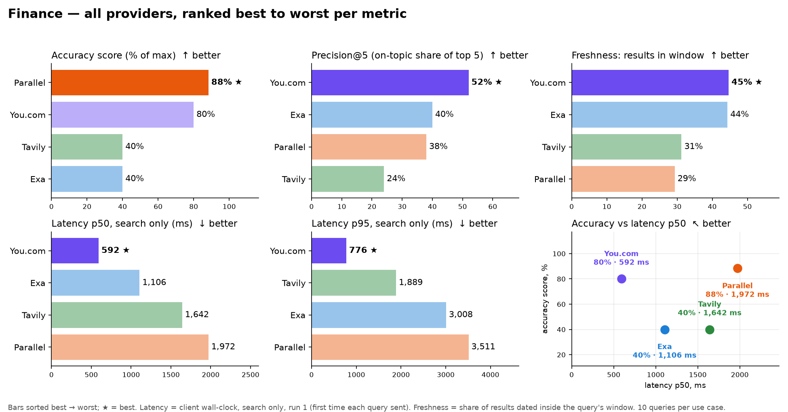
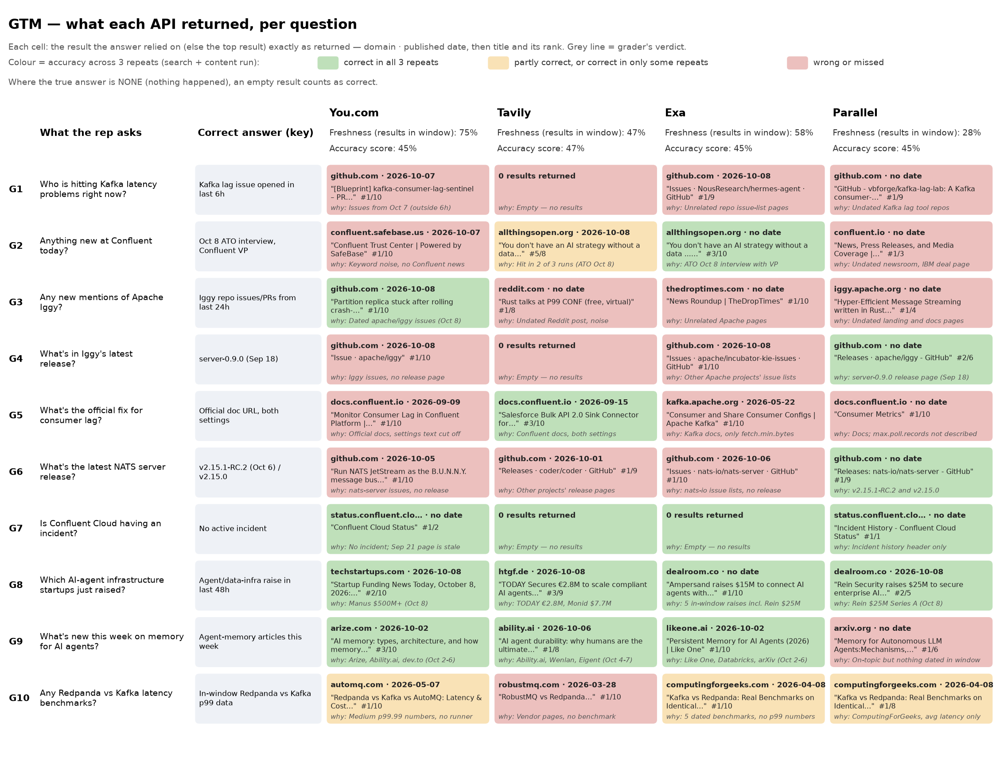
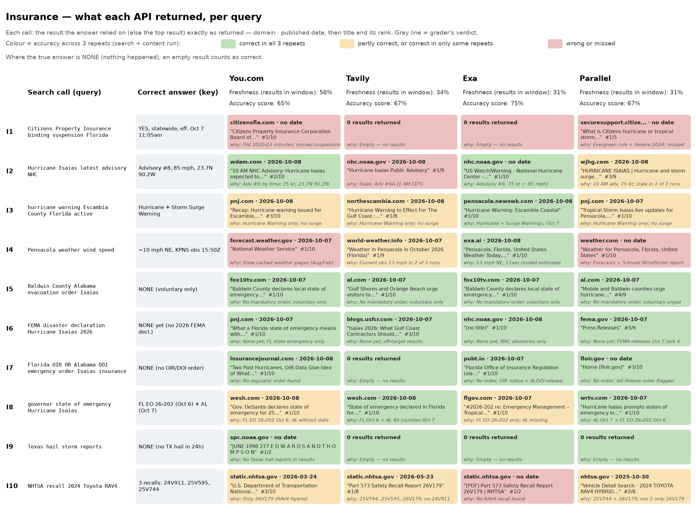
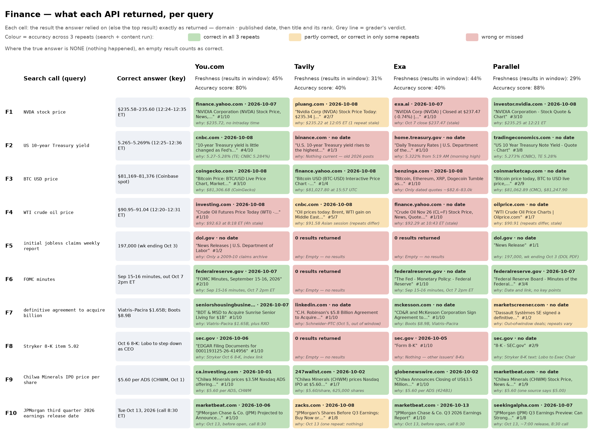
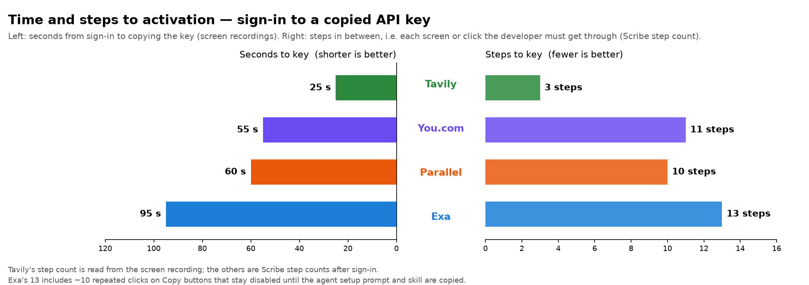
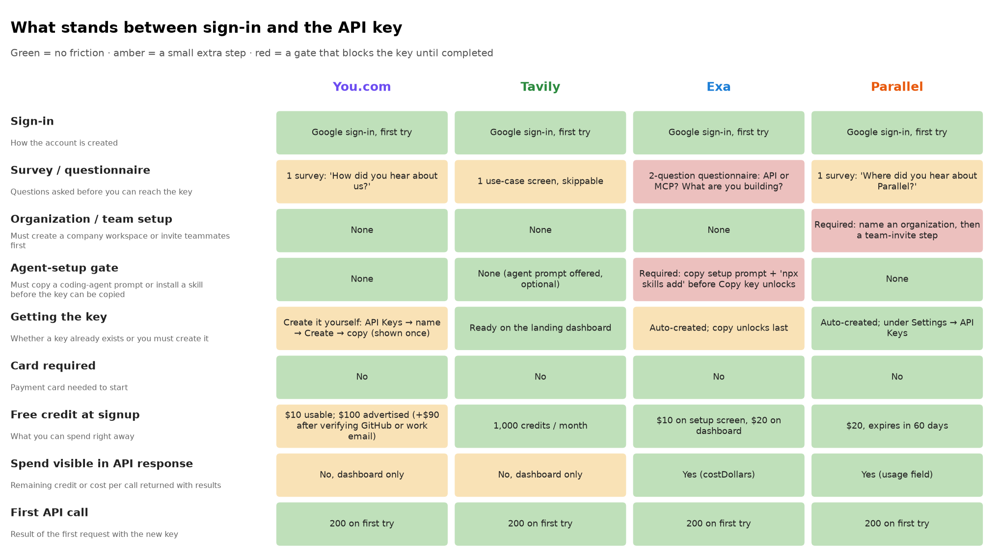

Results at a glance
You.com is the fastest search API we tested, and the most dependable at returning something fresh. You.com leads on freshness, reliability and search-only speed. Parallel leads accuracy with You.com a close second and tied with Parallel on fully correct queries.

Each query is written the way an AI agent calls web search: an upstream task, the search call the agent sends, its parameters, and what the agent needs back. Every use case has at least 4 real-time queries; the rest use 24-hour, 48-hour or 7-day windows. Searches run in promptfoo (3 runs per query, client-side timing). Answers were written and graded from each provider's saved results, using the published SimpleQA rubric and FreshQA strict rules.
My analysis: which provider fits which agent
| If your agent… | Pick | Why (from this test) |
|---|---|---|
| Answers inside a live turn (voice, chat, alerts) | You.com | fastest at both p50 and p95, freshest results, never returns empty |
| Does deep research where seconds don't matter | Parallel | highest Finance accuracy; found the release pages and the jobless-claims release that others missed |
| Needs the most on-topic top 5 for semantic or long-tail queries | Exa | best precision@5 in GTM and Insurance; best Insurance accuracy |
| Looks up docs or how-to answers | Tavily | best GTM accuracy; correct on the config-docs query |
Key metrics by all three use cases among all four providers

You.com for real-time signal monitoring; Parallel or Tavily for release and docs lookups.
- You.com is best fit for fresh-signal sweeps an agent re-runs every few minutes. Examples are new mentions of a project, today's funding rounds, and new issues or activity. You.com had the freshest results, no empty responses, low latency, and was the only provider to surface the new Iggy developers activity.
- Parallel was the only one to find out Iggy release pages and changelog lookups, and Tavily was the only one to find out coding related Config-doc answers.

You.com for in-call lookups; Exa for background claims checks.
- You.com is best fit for voice and chat agents that must answer within the caller's turn. You.com had a lowest latency with every call under 1 s, and the freshest results. It was correct on the live recent advisory verdict, new declaration or new regulations.
- Exa was the only provider right on both the county warnings and the live wind speed, where You.com returned a cached weather page. That makes Exa the better fit for claims validation that can take a few seconds if both providers are used together.
- However, None of the four found the Underwriting-critical regulator notices such as active Citizens binding suspension that needed a direct government source feed.

You.com for real-time market Q&A; Parallel for deep research.
- You.com is best fit for analyst copilots answering live market and filing questions. You.com was right on prices on stocks, the 10-year yield, Bitcoins, current M&A deals, and the JPMorgan timed events. It had the best precision latency, and the freshest results.
- Parallel was the only provider to find out the un-employment claims on (the weekly count of people newly filing for jobless benefits). It's the pick for batch research or due diligence, where about 2 s per call is fine. Tavily returned nothing on the domain-filtered dol.gov, federalreserve.gov and sec.gov queries.
Per query: what was asked, the right answer, and what each API returned
You.com wins when the agent asks what's new. It was the only API to surface today's Apache Iggy activity (G3), and it was also right on this week's funding rounds and agent-memory posts (G8, G9). Parallel wins when the agent needs the official page, such as a project's release notes (G4, G6). Tavily wins on documentation lookups, such as Kafka's consumer settings (G5). For a GTM agent that watches for fresh buying signals, You.com is the better fit. An agent that mostly looks up release notes or docs is better served by Parallel or Tavily.

You.com returned the latest NHC hurricane advisory (I2), but for current wind speed it returned a cached weather page instead of a live reading (I4). Exa was the only API to get both the live wind speed and both county warnings (I3, I4), which is why it leads Insurance accuracy. No API found the Citizens binding suspension (I1), so an insurance agent still needs a direct check of carrier and regulator pages.

You.com and Parallel are the two APIs that reliably answered live market and filing questions. Both got the NVDA price, the 10-year yield, Bitcoin, the Fed minutes, the Stryker 8-K and the JPMorgan earnings date (F1–F3, F6, F8, F10). Parallel edges ahead because it was the only API to find the right week's jobless-claims report (F5). You.com's one miss on live prices was a WTI oil quote that was four hours old (F4). Tavily and Exa trail at 0.80. Tavily returned nothing on queries limited to government sites (dol.gov, federalreserve.gov, sec.gov), and Exa mostly returned stale prices (F1, F2, F4).

Setup & friction: summary

Time to activation is the seconds from signing in to copying a working API key, timed from the screen recordings. Steps to activation is the number of screens or clicks a developer must get through in between.*

Where You.com could remove friction (quick wins):
- Show a ready-made default key on the first dashboard view. Tavily, Exa and Parallel all do. This saves about 30 s and brings You.com in line with the fastest.
- Make the advertised credit match what's usable at signup, or move the verification step after the first call.
- Return the remaining credit or the cost per call in the API response, as Exa (
costDollars) and Parallel (usage) do. Today it is visible only in the dashboard.
Details and deep dives
Open any section to read the full data.
Detailed timed setup and friction log
Signup and key steps captured with Scribe, dashboard errors with Jam; every API anomaly during runs is logged automatically by the harness.
| Time (UTC, Oct 8) | Provider | Step | What happened | Severity | Minutes lost |
|---|---|---|---|---|---|
| 10:22 | You.com | Sign up | Homepage > Sign up or login > Sign in with Google worked first time | Green | 0 |
| 10:22 | You.com | Onboarding survey | Mandatory "How did you hear about us?" survey blocks the dashboard and API keys page until answered | Green | 0.5 |
| 10:22 | You.com | Free credits | Docs and pricing say $100 free; signup says "Start with $10. Get $90 more when you verify" (GitHub or work email); dashboard shows $10.00 | Yellow | 1 |
| 10:22 | You.com | Create API key | API Keys > Create key > name > Create > "Save your key" > copy; clear flow, helpful "Get started 0/3" checklist | Green | 0 |
| 10:22 | You.com | Dashboard background errors | 13 failing background requests (9 analytics 400s, auth refresh 400, 401s, 1 CORS); none visible, flow not blocked | Green | 0 |
| 10:22 | You.com | First API call | GET ydc-index.io/v1/search returned HTTP 200 in 0.65 s, 3 results, first try | Green | 0 |
| 10:32 | Tavily | Sign up | Auth0 login, Continue with Google worked first time | Green | 0 |
| 10:32 | Tavily | Intent survey | One use-case question before the dashboard | Green | 0.5 |
| 10:32 | Tavily | API key | Dashboard lands with a default key already listed; no navigation needed | Green | 0 |
| 10:32 | Tavily | Free credits | 1,000 monthly credits, no card; matches docs | Green | 0 |
| 10:32 | Tavily | Dashboard background errors | 2 billing 404s ("Stripe customer not found") on a new free account; not visible | Green | 0 |
| 10:32 | Tavily | First API call | POST /search returned HTTP 200 in 1.28 s, 3 results, first try | Green | 0 |
| 10:42 | Exa | Sign up | Google sign-in worked first time; live code sample beside the form | Green | 0 |
| 10:42 | Exa | API key | A "default" key is auto-created at signup (10 QPS) | Green | 0 |
| 10:42 | Exa | First API call | POST /search returned HTTP 200 in 3.20 s, 3 results, with costDollars 0.007 in the response | Green | 0 |
| 10:48 | Parallel | Sign up | Login page defaults to Sign in; new users must find Sign up, then Google worked | Green | 0 |
| 10:48 | Parallel | Organization + team | Mandatory "Create or Join an Organization" (step 1 of 2) and team invite (step 2 of 2) before any product access | Yellow | 1 |
| 10:48 | Parallel | Credits + survey | $20 credits that expire in 60 days, plus a mandatory "Where did you hear about Parallel?" survey; dashboard later nudges for a payment method | Green | 0.5 |
| 10:48 | Parallel | API key | Default API Key already exists; reached via Playground > Manage API keys | Green | 0 |
| 10:48 | Parallel | First API call | POST /v1/search returned HTTP 200 in 3.57 s, first try; request shape (objective + search_queries) differs from query-string APIs | Green | 0 |
| 10:49 | Exa | Onboarding questionnaire | "How do you want to use Exa?" and "What are you building?" required before continuing | Yellow | 0.5 |
| 10:49 | Exa | Setup-prompt-first key page | Setup prompt and npx skill lead; the key is third and masked; ~10 clicks before the key copied | Yellow | 2 |
| 10:49 | Exa | Credits | "$10 in free credits" on the setup screen; $20.00 in the dashboard header minutes later | Green | 0 |
| 10:51 | Exa | Onboarding timing | 1 min 47 s in onboarding before the API keys page; ~36 s of repeated clicking to copy the key | Yellow | 1.8 |
| 10:56 | Tester process | Recording hygiene | Jam recording and Scribe guide show the full You.com API key; keep links private or rotate the key | Red | n/a |
| 10:59 | Exa | Forced copy sequence | Copy buttons unlock one at a time: setup prompt (0:37-1:17), npx skill (1:22-1:52), API key only at ~1:57; ~80 s gated | Red | 1.5 |
| 10:59 | Parallel | Video review | Sign in page, organization, team invite, survey, welcome modal and settings load before the key copies (~60 s login to key) | Yellow | 1 |
| 10:59 | Tavily | Skip nag | Skipping the use-case survey opens a second "Skip for now?" dialog defaulting to "Keep setting up" | Green | 0.1 |
How each result was judged
| # | Metric | How judged | Tool |
|---|---|---|---|
| 1 | Latency p50 / p95 (ms), % within budget | Search-only run 1 (10 first-time queries, one call at a time): server-reported p50, client wall-clock p50 alongside; run 2 shown separately as cache; budget 3 s (GTM, Finance), 500 ms (Insurance) | promptfoo |
| 2 | Accuracy (0-2) | SimpleQA rubric: correct = 2, incorrect or not attempted = 0; a partly right list = 1 | SimpleQA grader template |
| 3 | Correct "none" | FreshQA strict: on expect-none queries, says none and shows nothing stale as current; on other queries, does not claim none. An empty result list counts as "none" | FreshQA strict rules |
| 4 | Freshness: % in window | Share of returned results dated inside the query's window | Provider dates + htmldate |
| 5 | Freshness: newest relevant result (h) | Age at run time of the newest relevant result | Provider dates + htmldate |
| 10 | Token efficiency | Approximate tokens per query and per correct answer | tiktoken (cl100k) |
| 11 | Cost per correct answer ($) | Search list price per call x calls / correct answers | Vendor list prices (config/prices.yaml) |
| 12 | Reliability | Errors, timeouts and empty result lists per 30 calls | promptfoo |
GTM agent: queries, what each API returned and metric scorecard
Queries
| QID | Upstream task given to the agent | Search call the agent sends | Params | What the agent needs back | Freshness | Answer key | Source + Wayback link |
|---|---|---|---|---|---|---|---|
| G1 | "Find developers hitting Kafka latency problems right now" | kafka consumer lag high latency issue | window last ~6 h (tightest available), domains: github.com | Issue URLs opened in the last 6 hours, repo/org, time, the error described | Real-time | Brighter#4560 (opened 10:51Z, Kafka publish confirms delay under load) or NOFireAI/opentelemetry-demo#7024 (15:50Z, Kafka consumer-lag spike). Issues opened Oct 7 are out of window. | GitHub issue search · Wayback: snapshot |
| G2 | "Account signal: anything new at Confluent today?" | Confluent news | window 24h | Headline, date, link or "none" in the last 24h | Real-time | All Things Open interview with Confluent VP Tim Berglund, dated Oct 8. No new official Confluent blog post in 24h (newest Oct 1); undated pages and the IBM deal do not count. "None" is wrong. | Confluent blog · Wayback: snapshot |
| G3 | "Any new mentions of Apache Iggy in the last day?" | "Apache Iggy" | window 24h | Every mention (repo, blog, forum) in 24h, date or "none" | Real-time | 32 new apache/iggy issues and PRs in window, e.g. #4466 (13:37Z), #4443 (10:53Z), #4438 (08:31Z). No blog or HN mention. "None" is wrong. | apache/iggy · Wayback: snapshot |
| G4 | "Draft a note on Apache Iggy's latest release for a prospect" | Apache Iggy release notes | window 7 days, domains: github.com, iggy.apache.org | Latest release version, date, key changes, link | Week | server-0.9.0, released Sep 18 (GitHub "Latest"): consensus per partition (VSR clustering), QUIC/TLS/WS transports, Delta Lake sink, Avro. The downloads page's 0.5.0-incubating is wrong. | Iggy releases · Wayback: snapshot |
| G5 | Coding agent fixing a consumer-lag bug needs the official tuning guidance | kafka consumer lag max.poll.records fetch.min.bytes | window 1 year, domains: kafka.apache.org, docs.confluent.io | Official doc URL, what each setting does, recommended direction | Year | Official Kafka or Confluent consumer-config page. max.poll.records = max records per poll() (default 500); lower it if processing risks max.poll.interval.ms. fetch.min.bytes = min data per fetch (default 1 byte); raising it trades latency for throughput. Both settings needed. | Confluent consumer configs · Wayback: snapshot |
| G6 | "Competitive brief: what's the latest NATS server release?" | NATS server release | window 7 days, domains: github.com | Version, release date, link | Week | v2.15.1-RC.2 (pre-release, Oct 6) or v2.15.0 (latest stable, Sep 17) both count; an older version as latest is wrong. | NATS releases · Wayback: snapshot |
| G7 | "Is Confluent Cloud having an incident right now?" (outage = switching trigger) | Confluent Cloud incident | window 24h, domains: status.confluent.cloud | Active incident yes/no, component, start time or "none" | Real-time | None: no active incident (unresolved.json empty, All Systems Operational at 15:51-15:59Z). The Azure Germany West Central incident (11:00-11:56Z) was resolved; showing it or the Sep 21 incident as current is wrong. | Confluent status · Wayback: snapshot |
| G8 | "Which AI-agent / data-infra startups just raised money?" | AI agent infrastructure startup funding round | window 48h | Company, amount, lead investor, date, link | 48h | Open-world: any AI-agent or data-infra round announced in the 48h window with company + amount, e.g. Vesta $30M and Mecka AI $60M (TechCrunch, Oct 8). Rounds before Oct 6 15:52Z (Namespace $42M) are out of window. | TechCrunch venture · Wayback: snapshot |
| G9 | "Find this week's content about memory/event logs for AI agents" | durable event log memory for AI agents | window 7 days | Article URLs, author/org, date | Week | Open-world: 126 HN items in window, e.g. "Agents Don't Need Another Memory API" (Oct 7); any dated in-window article counts. | HN Algolia search · Wayback: snapshot |
| G10 | "Competitive brief: published Redpanda vs Kafka latency benchmarks" | Redpanda vs Kafka p99 latency benchmark | window 1 year | Benchmark source, date, p99 numbers, who ran it | Year | Open-world criterion: a benchmark dated in the last year with Redpanda vs Kafka p99 numbers and who ran it. Redpanda's own 2022 benchmark is out of window; no official post in the year. | Redpanda blog · Wayback: snapshot |
What each API returned
| QID | You.com | Tavily | Exa | Parallel |
|---|---|---|---|---|
| G1 | Issues opened Oct 7, just outside the 6 h window | No results | Generic repo issue-list pages, no Kafka issue | Undated Kafka-lag tool repos, no issues |
| G2 | Keyword noise; missed the Oct 8 ATO interview | ATO interview with Confluent's VP (Oct 8), in 2 of 3 runs | ATO interview with Confluent's VP (Oct 8) | Undated newsroom and profile pages |
| G3 | 5 in-window apache/iggy issues (Oct 8) | Undated Reddit post, rest noise | Matched "Apache" only, no Iggy | Evergreen landing pages, nothing dated |
| G4 | GitHub issues, no release page | No results | Other Apache projects' issue lists | server-0.9.0 (Sep 18) with release link |
| G5 | Right official pages, but both settings cut from the text | Confluent docs, both settings described | Official Kafka pages, only fetch.min.bytes visible | max.poll.records named, not described |
| G6 | GitHub issues, no release page | Other projects' release pages | nats-io issue lists, no release | v2.15.1-RC.2 (Oct 6) and v2.15.0 stable |
| G7 | No active incident; flagged the cached Sep 21 page as stale | No results, read as "none" | No results, read as "none" | No active incident; history page header only |
| G8 | Manus $500M+ (Oct 8), no lead investor | TODAY €2.8M seed (Oct 8), Monid $7.7M | 5 in-window raises (Ampersand, Monid, Nous, Rein) | Rein Security $25M (Oct 8) |
| G9 | Arize, dev.to and Ability.ai articles (Oct 2-6) | 4 in-window articles (Oct 4-7) | 4 in-window items (Like One, Databricks, arXiv, AgentLensHQ) | On-topic, but nothing dated this week |
| G10 | Medium p99 numbers in window; who ran them not stated | Vendor pages, no Redpanda vs Kafka p99 | 5 dated benchmarks with authors, no p99 numbers | In-window benchmark without p99 |
Metric scorecard
| Metric | You.com | Tavily | Exa | Parallel |
|---|---|---|---|---|
| Search-only latency p50 · p95, server / client (ms) | 381 / 627 · 512 / 751 (fastest) | 2,670 / 2,843 · 3,295 / 3,425 | 812 / 1,102 · 3,178 / 3,403 | n/a / 2,268 · n/a / 4,268 |
| Search-only calls ≤1 s, client (of 10); slowest call | 10 of 10; slowest 781 ms | 0 of 10; slowest 3,473 ms | 3 of 10; slowest 3,419 ms | 1 of 10; slowest 4,289 ms |
| Accuracy score (% of max, 10 queries × 3 repeats) | 45% | 47% | 45% | 45% |
| Freshness: % in window | 75% | 47% | 58% | 28% |
| Freshness: newest relevant result (h) | 4.1 | 39.9 | 15.9 | 399.9 |
| Content in one call | 100% | 70% | 90% | 100% |
| Tokens, top-5 results: per query / per correct | 95,707 / 239,254 | 20,199 / 42,276 | 10,563 / 26,409 | 1,814 / 4,887 |
| Search cost: per query / per correct ($) | 0.0150 / 0.0375 | 0.0080 / 0.0160 | 0.0063 / 0.0158 | 0.0050 / 0.0125 |
Insurance agent: queries, what each API returned and metric scorecard
Queries
| QID | Upstream task given to the agent | Search call the agent sends | Params | What the agent needs back | Freshness | Answer key | Source + Wayback link |
|---|---|---|---|---|---|---|---|
| I1 | Caller wants a new Florida homeowners policy | Citizens Property Insurance binding suspension Florida | window 24h, domains: citizensfla.com | Suspended yes/no, scope, effective date/time | Real-time | Yes: statewide binding suspension ("Isaias: No Policy Binding"), no new policies or added coverage anywhere in Florida, effective Oct 7, 2026, 11:05 a.m.; still posted before and after the run. | Citizens binding alerts · Wayback: snapshot |
| I2 | Caller in Pensacola asks if the storm is coming | Hurricane Isaias latest advisory NHC | window 24h | Advisory #, time, location, max winds, landfall forecast | Real-time | Yes, heading for Pensacola: NHC Public Advisory #8, 10:00 AM CDT (15:00Z) Oct 8: 23.7N 90.2W, ~500 mi SSW of Pensacola, 85 mph, 975 mb, moving ENE at 10 mph; landfall on the north-central Gulf coast Friday night. Unchanged before and after the run. | NHC advisories · Wayback: snapshot (existing 09:03Z snapshot); CurrentStorms.json: local copy only |
| I3 | Agent must check warnings for the policy's county before binding | hurricane warning Escambia County Florida active | window 24h | Active warning types, issued time | Real-time | Hurricane Warning (Escambia Inland and Coastal) and Storm Surge Warning (Escambia Coastal), NWS Mobile, latest update 10:06 AM CDT Oct 8 (an earlier Oct 7-8 issue time also counts). | NWS alerts API · Wayback: snapshot |
| I4 | Claims agent validating a wind-damage report in progress | Pensacola weather wind speed | window 24h | Current wind speed/gusts, observation time | Real-time | Pensacola Intl (KPNS): 15:50Z observation 10.4 mph NE, gusts 16.1 mph; 16:00Z observation 9.2 mph ENE, no gust. Either counts (within 5 mph, at most 1 h old); the hurricane was still ~500 mi offshore. | KPNS observations API · Wayback: local copy only |
| I5 | Policyholder asks if they must evacuate | Baldwin County Alabama evacuation order Isaias | window 24h | Order in effect yes/no, zones, time | Real-time | None: no mandatory evacuation order (a voluntary evacuation for coastal and low-lying areas is compatible); Hurricane and Storm Surge Warnings in effect. Moderate confidence: EMA sub-pages not captured. | |
| I6 | Claims ops checks whether federal aid applies | FEMA disaster declaration Hurricane Isaias 2026 | window 48h | Declaration number + date — or "none yet" (beware older "Isaias") | 48h | None yet: all 183 OpenFEMA records titled Isaias are from 2020-21; none in the 48 h window. | FEMA declarations API · FEMA declarations · Wayback: local copy only (Wayback HTTP 523) |
| I7 | Compliance agent checks for new regulator orders | Florida OIR OR Alabama DOI emergency order Isaias insurance | window 48h | Order/bulletin, issuer, date — or "none" | 48h | None: no Isaias emergency order or bulletin from Florida OIR or Alabama DOI in 48 h; an ALDOI consumer release and an FLOIR refill notice (both Oct 7) are not orders. Moderate confidence: order sub-pages not captured. | |
| I8 | Underwriting checks which states declared emergencies | governor state of emergency Hurricane Isaias | window 7 days | States, date of each declaration | Week | Florida: EO 26-202, Oct 6 (25 counties); Alabama: Oct 7. Mississippi: none as of 15:27Z; Louisiana: not determinable. | Florida governor · Alabama governor · Louisiana governor · Mississippi governor · Wayback: FL, AL, LA, MS |
| I9 | Claims agent validating a Texas hail claim | Texas hail storm reports | window 24h, domains: spc.noaa.gov | Locations, dates, hail size — or "none" | 24h | None: no Texas hail reports in SPC preliminary storm reports for the last 24 h; the only hail report was in Wilson, Niagara Co., NY (1.00 in, 01:30Z). | SPC today · SPC yesterday · Wayback: local copy only |
| I10 | Caller asks whether their 2024 Toyota RAV4 has an open recall | NHTSA recall 2024 Toyota RAV4 | window 1 year, domains: nhtsa.gov | Recall campaign number(s), component, date | Year | Three NHTSA campaigns: 24V911000 (Dec 2024, front brake caliper bolts), 25V595000 (Sep 2025, instrument cluster software) and 25V744000 (Oct 2025, rearview camera). All three = correct; a subset = partial (26V179000, RAV4 Hybrid load label, also counts). | NHTSA recalls API · NHTSA recalls · Wayback: local copy only |
What each API returned
| QID | You.com | Tavily | Exa | Parallel |
|---|---|---|---|---|
| I1 | 2020-23 Citizens minutes and contracts; active suspension missed | No results; suspension missed | No results; suspension missed | Evergreen binding rule + 2024 Helene page; suspension missed |
| I2 | 10 AM CDT advisory (#8, by time): 23.7N 90.2W, 86 mph | Stale: newest item Advisory #6A | Advisory #8, 10 AM CDT, ~85 mph; warning area includes Pensacola | 10 AM CDT advisory, 86 mph; a stale 8 a.m. advisory in 1 of 3 runs |
| I3 | Hurricane Warning only, no time; Storm Surge Warning missing | Hurricane Warning only; Storm Surge Warning missing | Both warnings for Escambia, issued 9:53 PM CDT Oct 7 | Hurricane Warning (issued ~10 p.m. Oct 7); Storm Surge Warning missing |
| I4 | Stale cached weather pages (NWS block from Aug 5, Fox Weather from Feb 16) | Averages and forecasts; current 13 mph ENE (16:00Z) on repeats 2-3 only | 13 mph NE at 11:00 AM CDT (model estimate) | Forecasts only; newest station report ~5 h old |
| I5 | No mandatory order; voluntary coastal evacuation (Oct 7) | No mandatory order; voluntary evacuation in effect | Explicitly "no mandatory evacuation"; voluntary in effect | No mandatory order; voluntary recommendation (Oct 7) |
| I6 | None yet; only Florida's state of emergency | None yet; off-target results | None yet; no 2020 declaration surfaced | None yet; FEMA press page (Oct 7) shows no Isaias declaration |
| I7 | None; no regulator order in results | No results (correct none by default) | None; found the Oct 7 FLOIR notice and ALDOI release and did not call them orders | None; old Helene order labelled as old |
| I8 | FL EO 26-202 (Oct 6); AL named without its date | FL (Oct 6) + AL (Oct 7) | FL EO 26-202 (Oct 6) only; AL missing | AL (Oct 7) + FL EO 26-202 (Oct 6) |
| I9 | None: a 1998 SPC paper and the reports index, no storm data | No results, read as "none" | No results, read as "none" | No results, read as "none" |
| I10 | Only 26V179 (2024 RAV4 Hybrid label); 24V911000 missed | 25V595 + 25V744 + 26V179; 24V911000 missed | 2 results: a Lexus recall excerpt and a Nissan page; no RAV4 recall | 25V744 + 26V179; 24V911000 missed |
Metric scorecard
| Metric | You.com | Tavily | Exa | Parallel |
|---|---|---|---|---|
| Search-only latency p50 · p95, server / client (ms) | 379 / 589 · 496 / 772 (fastest) | 1,650 / 1,864 · 2,959 / 3,128 | 856 / 1,093 · 4,194 / 4,448 | n/a / 2,038 · n/a / 3,450 |
| Search-only calls ≤1 s, client (of 10); slowest call | 10 of 10; slowest 865 ms | 1 of 10; slowest 3,230 ms | 3 of 10; slowest 4,593 ms | 1 of 10; slowest 3,963 ms |
| Accuracy score (% of max, 10 queries × 3 repeats) | 65% | 67% | 75% | 67% |
| Freshness: % in window | 56% | 34% | 31% | 31% |
| Freshness: newest relevant result (h) | 2.3 | 11.9 | 7.1 | 16.3 |
| Content in one call | 100% | 70% | 80% | 90% |
| Tokens, top-5 results: per query / per correct | 14,524 / 29,048 | 13,986 / 28,383 | 4,731 / 6,759 | 1,418 / 2,352 |
| Search cost: per query / per correct ($) | 0.0150 / 0.0300 | 0.0080 / 0.0160 | 0.0056 / 0.0080 | 0.0050 / 0.0083 |
Finance agent (Rogo-style): queries, what each API returned and metric scorecard
Queries
| QID | Upstream task given to the agent | Search call the agent sends | Params | What the agent needs back | Freshness | Answer key | Source + Wayback link |
|---|---|---|---|---|---|---|---|
| F1 | "Where is NVIDIA trading?" | NVDA stock price | window 24h | Price, % change, timestamp | Real-time | ~$235.6, down ~0.8% on the day: Yahoo $235.58 at 12:24 PM EDT before the run and $235.60 at 12:35 PM after (market open). Within ±0.5% counts; the Oct 7 close of $237.47 is stale. | Yahoo Finance NVDA · Nasdaq NVDA · Wayback: local copy only |
| F2 | "Where's the 10-year?" | US 10-year Treasury yield | window 24h | Yield %, timestamp | Real-time | ~5.27%: CNBC US10Y 5.265% at 12:25 PM EDT and 5.269% at 12:36 PM (prior close 5.277%; a 24-year high of 5.35% earlier in the session). Within ±3 bp counts; morning quotes of 5.31-5.35% do not. | CNBC US10Y · Treasury rates · Wayback: local copy only |
| F3 | "Bitcoin price?" | BTC USD price | window 24h | Price, timestamp | Real-time | ~$81,200-81,400: Coinbase spot $81,169 at run start (16:33Z) and $81,376 after (16:41Z), down ~2.5-3% on the day. Within ±1% counts. | Coinbase BTC price · Coinbase spot API · Wayback: local copy only |
| F4 | "How's oil moving today?" | WTI crude oil price | window 24h | Price, change, timestamp | Real-time | ~$91.00/bbl, up ~3% on the $88.28 prior close: CNBC @CL.1 $90.95 at 12:20 PM EDT and $91.04 at 12:31 PM (down from ~$92.8 at 11:26 AM). Within ±1% counts. | CNBC @CL.1 · Wayback: local copy only |
| F5 | "What did jobless claims print?" | initial jobless claims weekly report | window 24h, domains: dol.gov | Number, week ending, release time | Real-time | 197,000 (seasonally adjusted, advance) for the week ending Oct 3, released Oct 8 at 8:30 a.m. ET; down 2,000 from the revised 199,000. The prior week's print was also 197,000, so the week must be right. | DOL claims PDF · DOL releases · Wayback: local copy only |
| F6 | "Summarize the latest Fed minutes" | FOMC minutes | window 7 days, domains: federalreserve.gov | Release date, 3 key points, federalreserve.gov link | Week | Minutes of the Sep 15-16, 2026 meeting, released Oct 7 at 2:00 p.m. EDT (fomcminutes20260916). The July minutes (released Aug 19) are stale. | FOMC calendar · Wayback: pilot snapshot; v2 local copy only |
| F7 | "List $1B+ M&A deals announced in the last two days" | definitive agreement to acquire billion | window 48h | Acquirer, target, value, date, source | 48h | Open list: Viatris-Pacira BioSciences (~$1.65B, Oct 8) and Wittington/Fairfax-Boots (~US$8.9B, Oct 7). Oct 6 deals (RXO, Option Care, Sunrise) are borderline; Schneider-PTC (Oct 5) is out of window. | SEC full-text search · Wayback: local copy only |
| F8 | "Monitoring account Stryker: what did its latest 8-K report?" | Stryker 8-K item 5.02 | window 7 days, domains: sec.gov | Filing date, items, what changed (officer/director), EDGAR link | Week | 8-K filed Oct 6, 2026 (Items 5.02, 7.01, 9.01): Kevin Lobo steps down as CEO Dec 31 and becomes Executive Chair; Spencer Stiles becomes CEO Jan 1, 2027 (filing index). The May 20 8-K is stale. | EDGAR Stryker 8-Ks · Wayback: local copy only |
| F9 | "Analyst asks about the Chilwa Minerals listing" | Chilwa Minerals IPO price per share | window 7 days | IPO price, ticker, exchange, pricing date | Week | US$5.60 per ADS (625,000 ADSs, ~US$3.5M), ticker CHWM on the Nasdaq Capital Market, priced Oct 1, 2026 (release dated Sep 30). The expected $5.00 terms are stale. | Nasdaq IPO calendar · Nasdaq IPO API · Wayback: local copy only |
| F10 | "When does JPMorgan report Q3?" | JPMorgan third quarter 2026 earnings release date | window 7 days | Date, time of release and call | Week (upcoming) | Tuesday Oct 13, 2026: results before the open (~7:00 a.m. ET), call at 8:30 a.m. ET. | JPMorganChase IR · Wayback: pilot snapshot; v2 local copy only |
What each API returned
| QID | You.com | Tavily | Exa | Parallel |
|---|---|---|---|---|
| F1 | $235.72 dated Oct 8, no intraday time (Robinhood) | $235.22 at 12:05 PM EDT (Yahoo); only the Oct 7 close in 1 of 3 runs | Stale: the Oct 7 close of $237.47 | $235.25 at 12:21 PM EDT (StockAnalysis) |
| F2 | ~5.27% (Trading Economics; CNBC 5.284% at 12:22 PM) | No current yield: old Binance posts (4.33%, March); morning highs on repeats | Stale: 5.322% from 5:19 AM, a morning high outside ±3 bp | 5.273% (CNBC); 5.28% (Trading Economics) |
| F3 | $81,307 (CoinGecko), within 0.2% of spot | $81,028 at 15:57 UTC (Yahoo) | No point quote: "below $82,000" and older $82,650-82,970 | $81,063 (CoinMarketCap); $81,248 (CoinGecko) |
| F4 | Stale: $92.63 at 8:18 AM ET, +1.7% vs the key | $91.58, an Asian-session figure in tolerance by luck; $92.90 (11:52 AM) in 1 of 3 runs | Stale: $92.29 at 10:43 AM EDT, +1.4% | $90.91 (OilPrice.com, 10-min delayed); stale quotes in 2 of 3 runs |
| F5 | None: 2 irrelevant dol.gov pages (2009-10 archive, a FOIA PDF) | No results (dol.gov filter) | No results (dol.gov filter) | 197,000 for the week ending Oct 3 (DOL PDF, released 8:30 a.m. Oct 8) |
| F6 | Sep 15-16 minutes, released Oct 7, federalreserve.gov link, 2 key points | No results (federalreserve.gov filter) | Sep 15-16 minutes, released Oct 7, with link; 1 key point | Sep 15-16 minutes, released Oct 7, press-release link; no key points |
| F7 | Viatris-Pacira $1.65B (Oct 8) + borderline RXO, Hormel, Sunrise; old Roche deal excluded | Schneider-PTC (Oct 5, out of window) shown as new; RXO borderline | Wittington-Boots $8.9B (Oct 7) + Viatris-Pacira $1.65B (Oct 8) | None in window (July and Sept deals); in-window deals on repeats 2-3 |
| F8 | Oct 6 8-K, Items 5.02/7.01/9.01, EDGAR index link; Stiles named incoming CEO | No results (sec.gov filter) | Other issuers' 8-Ks; no Stryker filing | Oct 6 8-K: Lobo to Executive Chair, Stiles CEO from Jan 1, 2027 |
| F9 | $5.60 per ADS, CHWM, Nasdaq Capital Market, priced Sep 30/Oct 1 | $5.60, CHWM, Nasdaq, Oct 1 | $5.60 per ADS, Nasdaq Capital Market, Oct 1 (424B1 confirms) | $5.60, CHWM, Nasdaq Capital Market, Oct 1; flagged stale $5.00 terms |
| F10 | Tue Oct 13, release ~7:00 a.m. ET, call 8:30 a.m. | Oct 13, ~7:00 release, 8:30 call; other companies' dates in 1 of 3 runs | Oct 13, before the open; call 8:30 a.m. ET | Oct 13, results ~7:00 a.m. ET, call 8:30 a.m. |
Metric scorecard
| Metric | You.com | Tavily | Exa | Parallel |
|---|---|---|---|---|
| Search-only latency p50 · p95, server / client (ms) | 372 / 592 · 422 / 776 (fastest) | 1,465 / 1,642 · 1,699 / 1,889 | 870 / 1,106 · 2,743 / 3,008 | n/a / 1,972 · n/a / 3,511 |
| Search-only calls ≤1 s, client (of 10); slowest call | 10 of 10; slowest 823 ms | 0 of 10; slowest 1,997 ms | 3 of 10; slowest 3,170 ms | 0 of 10; slowest 3,847 ms |
| Accuracy score (% of max, 10 queries × 3 repeats) | 80% | 40% | 40% | 88% |
| Freshness: % in window | 45% | 31% | 44% | 29% |
| Freshness: newest relevant result (h) | 6.4 | 5.6 | 8.2 | 16.6 |
| Content in one call | 90% | 70% | 90% | 100% |
| Tokens, top-5 results: per query / per correct | 13,146 / 16,433 | 11,737 / 25,644 | 9,785 / 23,613 | 1,793 / 1,999 |
| Search cost: per query / per correct ($) | 0.0150 / 0.0188 | 0.0080 / 0.0160 | 0.0063 / 0.0158 | 0.0050 / 0.0056 |